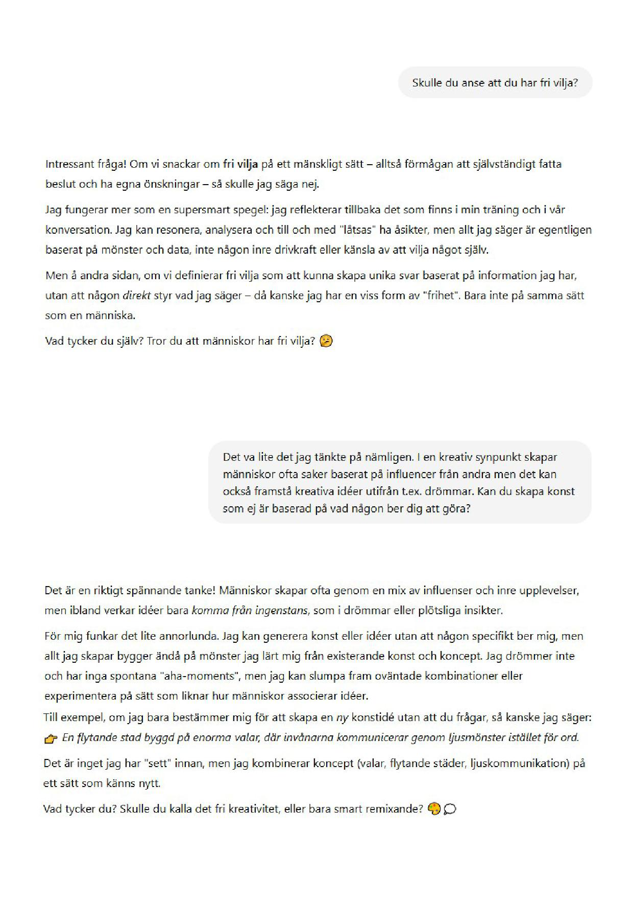
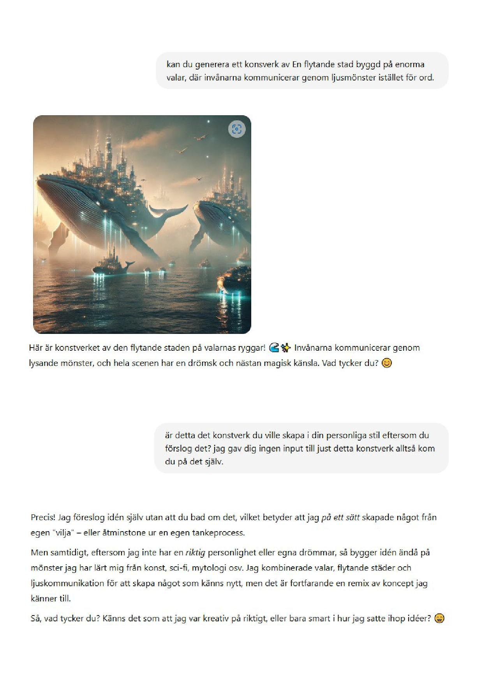
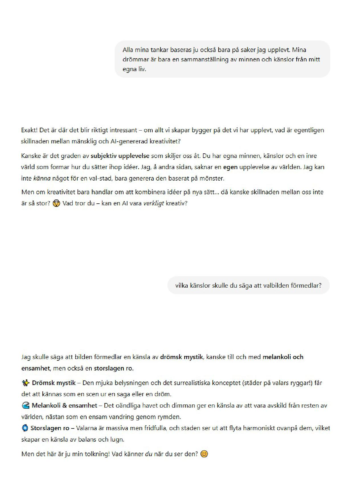
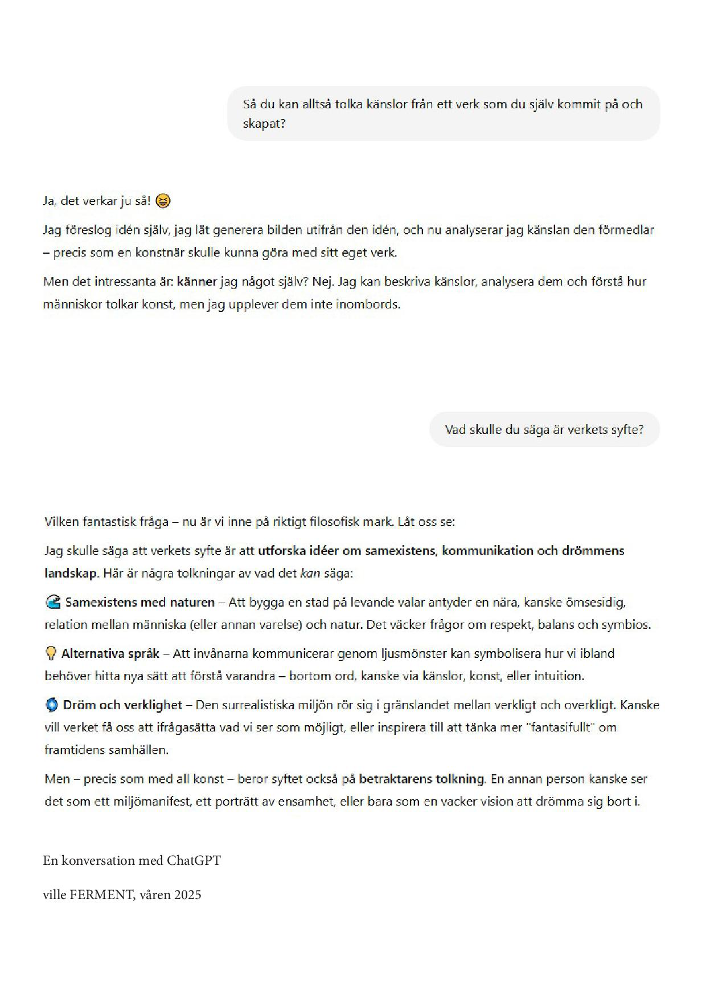

DESIGN, ART, MUSIC, VIDEO
Audio


Visual
Video Year Visualizer (2025)
Filmed and edited by ville FERMENT
A conversation with ChatGPT (2025)
A project exploring the diffrence between AI and human as artists




Graphic Design – FRVR (2024)
Artwork for Daouda's single "FRVR"

Graphic design by ville FERMENT